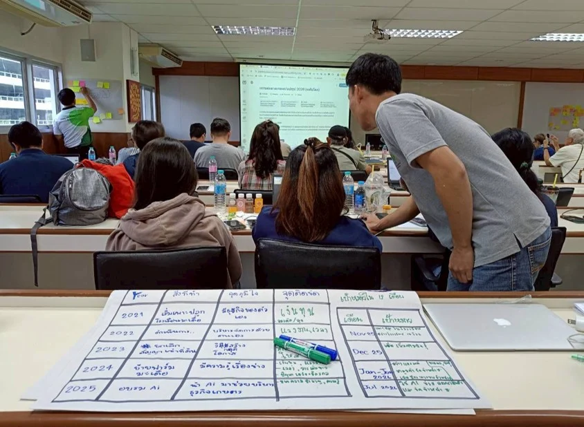

2568
EDGE1 · เริ่มที่ทักษะของแต่ละคน
ฝึกใช้ข้อมูลและเครื่องมือดิจิทัลเพื่อทำความเข้าใจปัญหา พัฒนาแนวคิดธุรกิจ และทดลองรับความเห็นจากผู้คน
106ผู้เข้าร่วมกิจกรรม
21แผน / ต้นแบบธุรกิจ
ที่มา: รายงาน EDGE Thailand 2025 ฉบับ 26 ก.พ. 2569 สไลด์ 5–6 ตัวเลขแต่ละตัวใช้เกณฑ์นับต่างกัน